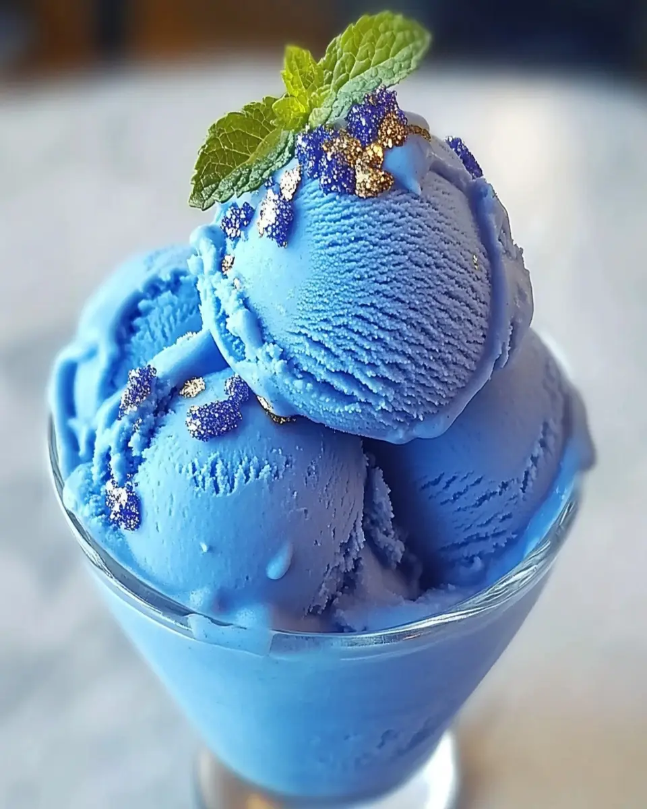
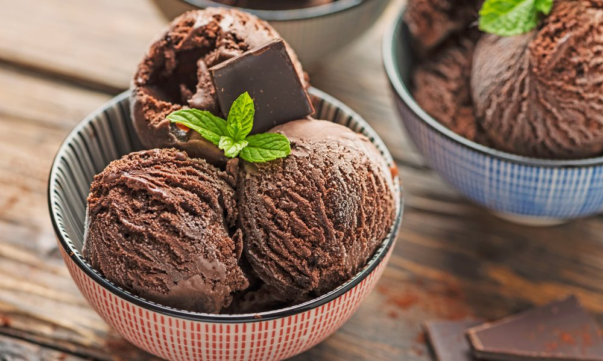
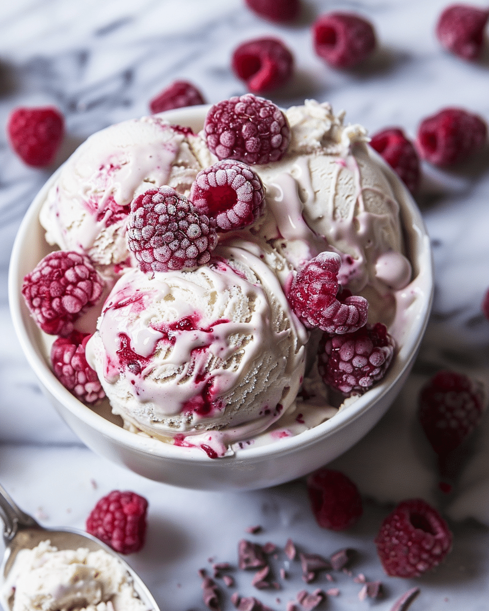
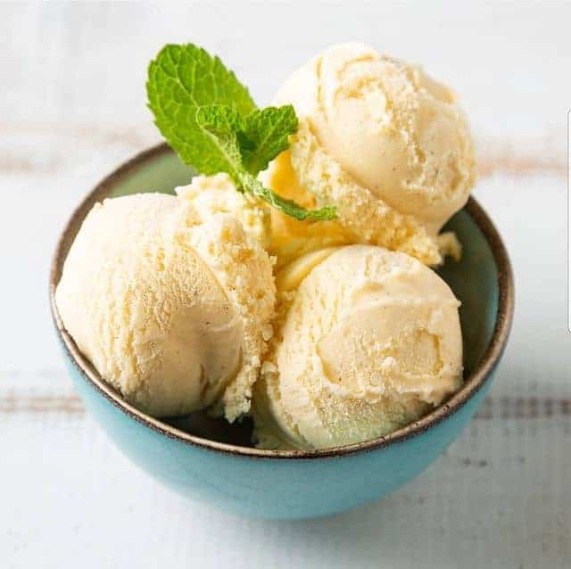
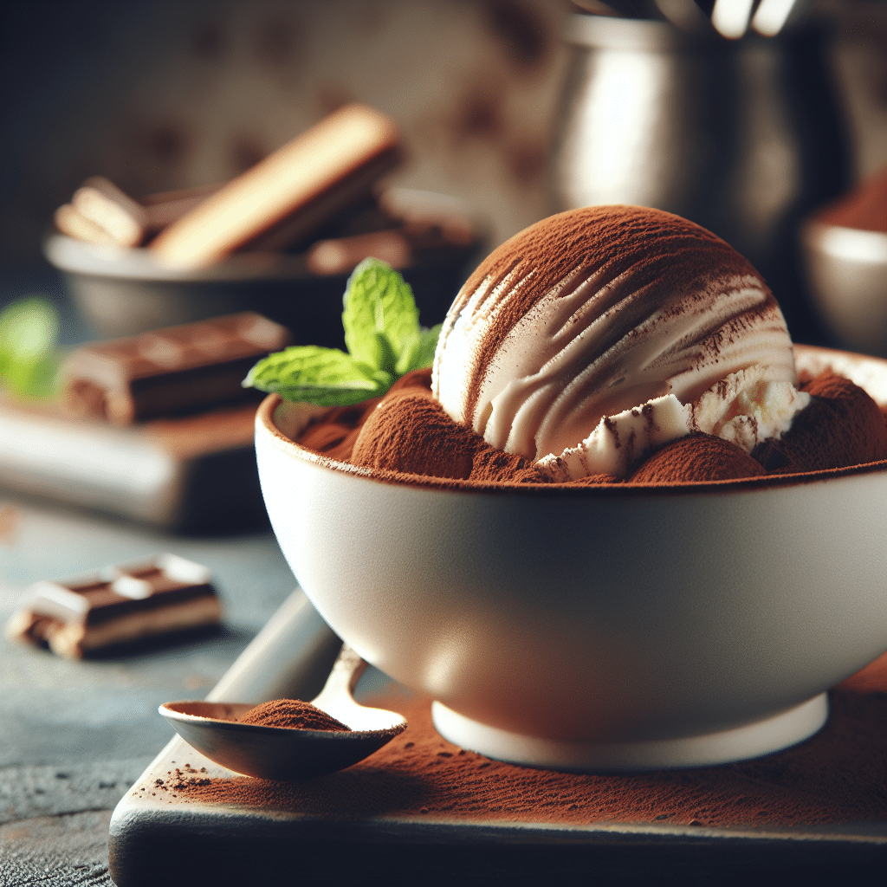
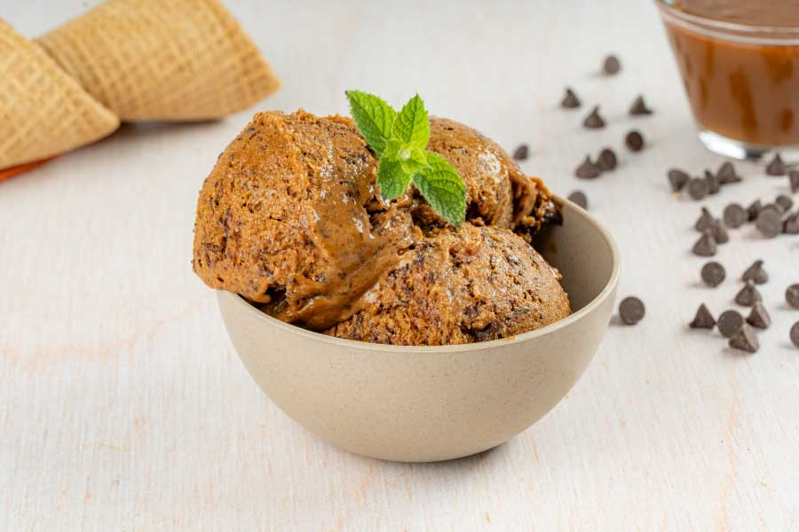
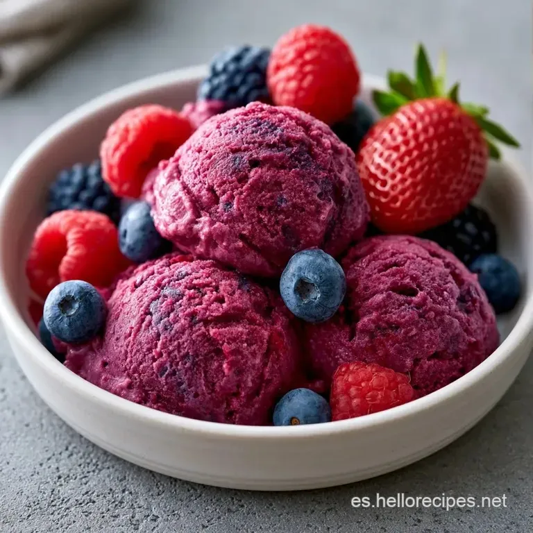
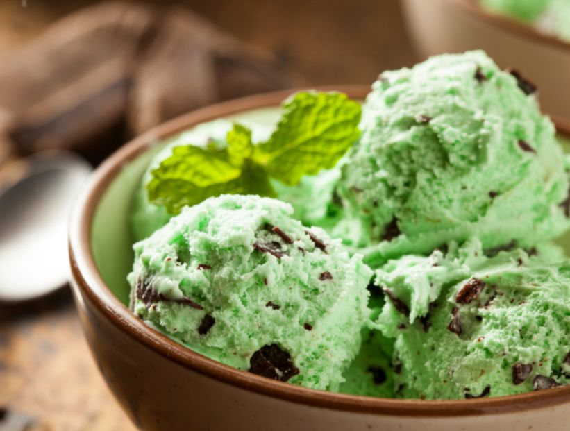

Crema del cielo

hecho con base de crema americana, colorante azul, esencias de vainilla y guinda para darle un sabor distintivo

hecho con base de crema americana, colorante azul, esencias de vainilla y guinda para darle un sabor distintivo

Elaborado con cacao en polvo con un gusto impactante pero sutil. Un chocolate que jamas se podria comparar y deja huella a la hora de degustarlo

El helado de mascarpone es un postre cremoso elaborado con queso mascarpone, un queso italiano suave y rico que aporta textura aterciopelada y sabor delicado

es un helado de chocolate preparado a partir de chocolate, leche y azúcar, con un toque suave pero delicioso y trozos de chocolate blanco arriba.
.webp)
Contiene nuestra especialidad de helado de chocolate mas una salsa dulce y rica de pistacho con un crujiente perfecto al gusto
Su base incluye; leche entera, nata para montar, yemas de huevo y azúcar, aromatizados con vaina de vainilla o extracto natural
.webp)
Para lograr su sabor tan exquisito arrancamos la preparacion cociendo cerezas deshuesadas con azúcar, miel y limón, triturando el puré y mezclándolo con yogur griego y nata

El helado de tiramisú es una versión helada del clásico postre italiano, preparado con mascarpone, nata, café y bizcochos de soletilla

Este sabor incluye dulce de leche, crema de leche y chocolate semiamargo picado

elaborado con una deliciosa mezclas de frambuesas, arándanos, moras y frutillas congeladas
.webp)
esta elaborado con nuestro helado de chocolate clasico, y le sumamos almendras bañadas en almibar trituradas dando un toque crujiente y delicioso

Elaborado con helado de menta clasico sumado de unos trozos de chocolate semiamargo